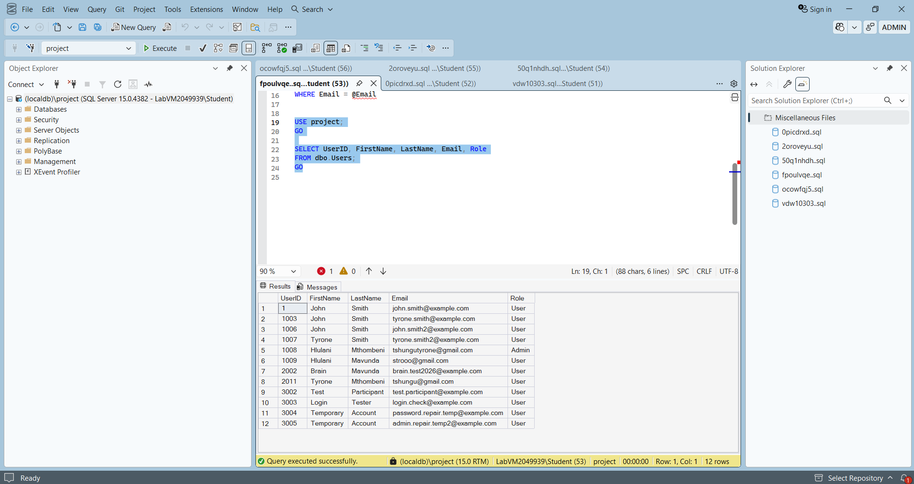
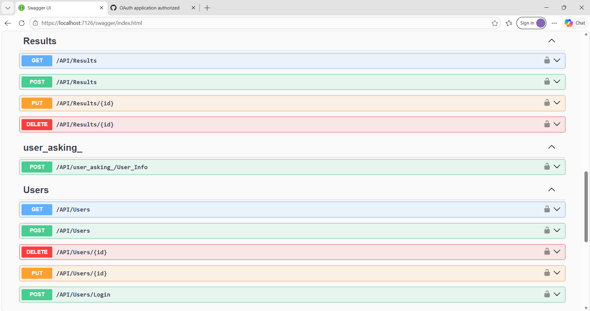
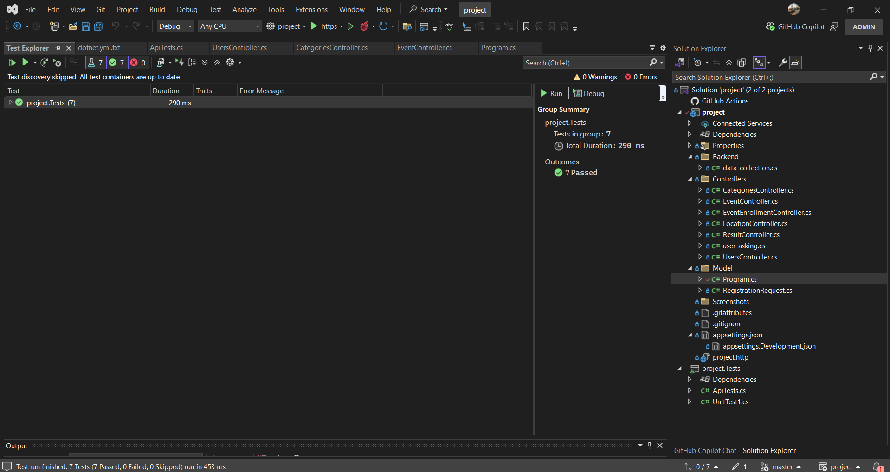

PROJECT 07
ASP.NET Core Web API
A backend development project focused on building RESTful API endpoints, managing data and implementing authentication.
View GitHub Repository →Project Overview
This project demonstrates the development of an ASP.NET Core Web API using C# and SQL Server. It provides backend functionality for managing application data through API endpoints and database operations.
Swagger was used to explore and test API endpoints, while JWT authentication was implemented to protect authorised resources.
Key Features
RESTful API
API endpoints for retrieving, creating, updating and deleting records.
SQL Server
Database connectivity and data management using SQL Server LocalDB.
JWT Authentication
Token-based authentication and protection of authorised endpoints.
Swagger Testing
API documentation and endpoint testing through the Swagger interface.
Technologies Used
Project Screenshots
A look at the project structure, database, API endpoints and automated testing evidence.

01. Project Structure
The organisation of the API project and its files.

02. Database Tables
Database tables used to organise application data.

03. Swagger Endpoints
API documentation and endpoint testing.

04. Automated Tests
Screenshot evidence of the project's automated testing.
Learning Outcomes
- Developing RESTful APIs using ASP.NET Core.
- Connecting an application to a SQL Server database.
- Working with CRUD operations and data management.
- Implementing JWT-based authentication.
- Documenting and testing endpoints using Swagger.
- Understanding backend application architecture and testing.
Explore the Source Code
View the source code and project implementation on GitHub.
GitHub Repository →